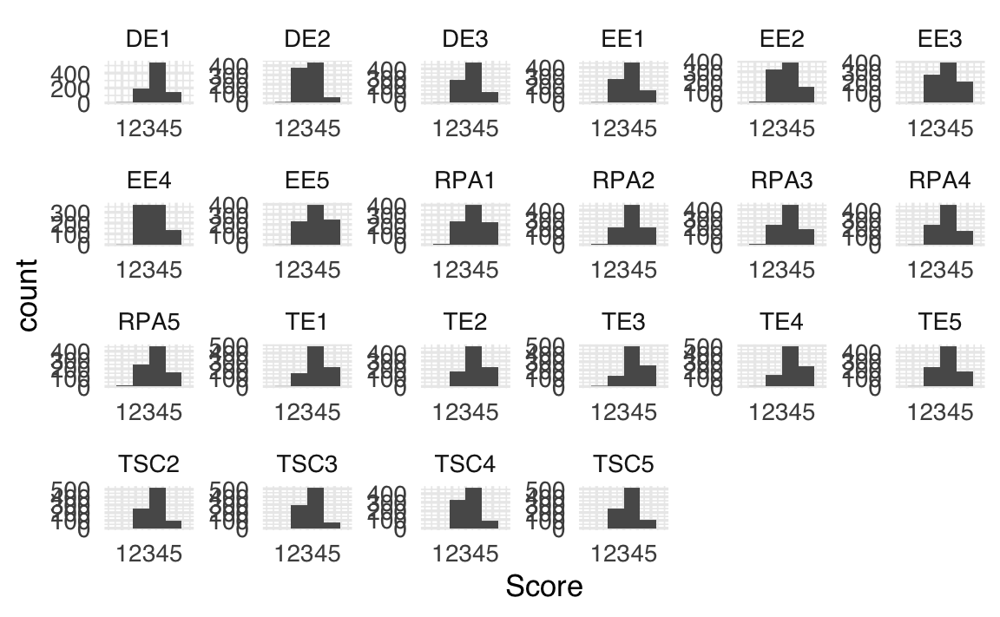
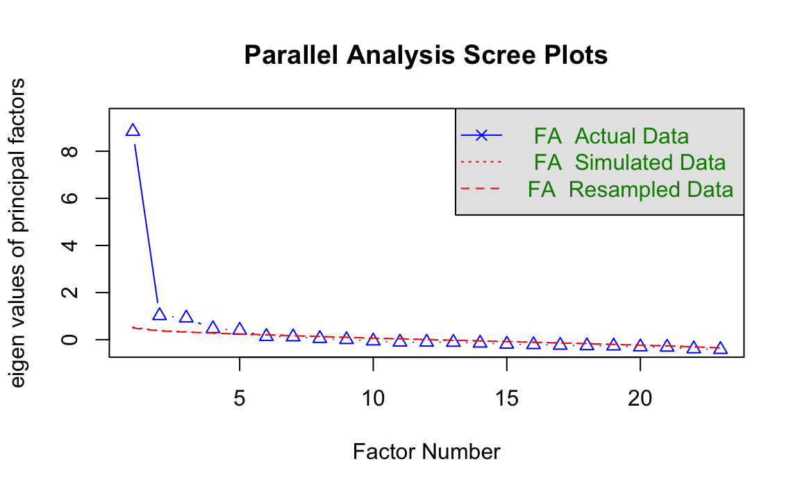

here::here("code", "_common.R") |>
source()
# Load packages
if (!requireNamespace("pacman")) install.packages("pacman")
pacman::p_load(lavaan, psych, semPlot, semTools, effectsize, devtools)45 Strategia Integrata per un’Analisi Fattoriale
In questo capitolo imparerai a
- il flusso di lavoro per eseguire l’analisi fattoriale in R.
Prerequisiti
- Leggere il capitolo Factor Analysis in Education Research Using R del testo di Saqr & López-Pernas (2024).
Preparazione del Notebook
45.1 Introduzione
Questo capitolo propone un tutorial, ispirato al lavoro di Saqr & López-Pernas (2024), su come condurre un’Analisi Fattoriale utilizzando R. Secondo Saqr & López-Pernas (2024), la distinzione tra Analisi Fattoriale Esplorativa (EFA) e Analisi Fattoriale Confermativa (CFA) non è sempre netta. Nella pratica, entrambe le tecniche vengono spesso impiegate all’interno dello stesso studio per ottenere una comprensione più completa dei costrutti latenti.
In questa sezione viene presentata una strategia integrata per combinare EFA e CFA, articolata in tre fasi che i ricercatori possono seguire quando i costrutti latenti giocano un ruolo centrale nello studio. Questo approccio è utile sia quando i costrutti latenti sono il fulcro dello strumento in esame, sia quando vengono utilizzati come predittori o esiti nell’analisi.
45.1.1 I tre passaggi principali:
Esplorazione della struttura fattoriale
Identificare il numero e la natura dei fattori sottostanti attraverso l’EFA, per ottenere un modello iniziale della struttura dei dati.Costruzione e valutazione del modello fattoriale
Utilizzare la CFA per confermare il modello individuato nell’EFA, valutando l’adattamento del modello ai dati raccolti.Valutazione della generalizzabilità
Verificare se la struttura fattoriale individuata è replicabile e stabile in campioni diversi o in contesti differenti.
Questo capitolo assume che il ricercatore abbia già completato una fase preliminare di sviluppo dello strumento, concentrandosi su un costrutto di interesse. Inoltre, si presuppone che i dati utilizzati provengano da un campione rappresentativo della popolazione target.
45.2 Passo 1: Esplorazione della Struttura Fattoriale
Dopo aver selezionato le variabili di interesse e raccolto i relativi dati, il ricercatore dovrebbe avviare il processo con un’Analisi Fattoriale Esplorativa (EFA). Se si utilizza uno strumento già validato o si dispone di ipotesi solide sulla struttura fattoriale sottostante, l’obiettivo iniziale sarà verificare se il numero di fattori e le saturazioni degli indicatori sui fattori corrispondono ai risultati attesi. In questa fase, alcune domande fondamentali da porsi includono:
- Le variabili ipotizzate come influenzate da uno stesso fattore caricano effettivamente su un unico fattore?
- Se si presuppone l’esistenza di un unico fattore sottostante, le variabili mostrano effettivamente carichi elevati su quel fattore?
Nel caso di strumenti nuovi, l’EFA serve a valutare se la struttura fattoriale emergente è interpretabile. In questo caso, è utile chiedersi:
- Le variabili che saturano principalmente su un fattore condividono effettivamente un contenuto comune?
- Le variabili che saturano su fattori diversi riflettono differenze qualitative evidenti?
Ad esempio, in un test di matematica, potrebbe emergere che compiti di addizione, sottrazione, divisione e moltiplicazione saturano su quattro fattori distinti, interpretabili rispettivamente come abilità specifiche in ciascuna operazione.
In questa fase, potrebbero rendersi necessari aggiustamenti. Per esempio, variabili che non presentano carichi fattoriali sufficientemente elevati (ad esempio inferiori a 0.3) su alcuna dimensione potrebbero essere rimosse, seguite da una nuova esecuzione dell’EFA. Tuttavia, è fondamentale riflettere attentamente sulle ragioni di eventuali carichi fattoriali bassi, che potrebbero dipendere, ad esempio, da una formulazione poco chiara di un item. La rimozione di variabili dovrebbe essere guidata da una motivazione teorica solida, evitando decisioni arbitrarie.
45.3 Passo 2: Costruzione del Modello Fattoriale e Valutazione dell’Adattamento
Dopo aver individuato un modello preliminare tramite l’EFA, il passo successivo consiste nel raffinare il modello e applicare la CFA per valutare quanto bene esso si adatti ai dati. Questo significa verificare se le covarianze previste dalla struttura fattoriale corrispondono alle covarianze osservate nel dataset. Nell’EFA, ogni variabile poteva caricare su tutti i fattori, ma con la CFA è possibile limitare i carichi fattoriali sulla base di considerazioni teoriche o empiriche.
In questa fase, è importante restringere il modello eliminando i carichi trasversali (cross-loadings) che non sono coerenti con la teoria o che risultano vicini allo zero. I carichi molto bassi possono essere rimossi senza introdurre problemi, ma quelli più alti richiedono una valutazione attenta. Anche se inizialmente sembrano privi di significato, la loro presenza potrebbe suggerire informazioni inattese sui dati. Pertanto, prima di rimuoverli, è fondamentale verificarne la coerenza con la teoria o le ipotesi iniziali. Se, dopo un’analisi approfondita, questi carichi possono essere giustificati teoricamente, è preferibile mantenerli. In caso contrario, si possono eliminare, procedendo poi a valutare l’adattamento del modello modificato ai dati.
Una volta definite le relazioni tra variabili e fattori, si costruisce il modello CFA e lo si applica al dataset. Se l’adattamento del modello non risulta soddisfacente, è possibile tornare ai risultati dell’EFA per valutare l’inclusione di ulteriori carichi fattoriali o altre modifiche. Tuttavia, qualsiasi aggiunta o cambiamento deve essere giustificato teoricamente, evitando adattamenti puramente empirici.
45.4 Passo 3: Valutazione della Generalizzabilità
Dopo aver costruito e valutato il modello, l’obiettivo è verificarne la generalizzabilità. Questo passaggio è cruciale per garantire che il modello sia valido non solo per i dati attuali, ma anche per futuri studi sulla stessa popolazione. Tale verifica si effettua tramite la validazione incrociata, che consiste nel testare il modello su un dataset indipendente.
Idealmente, sarebbe opportuno raccogliere un secondo dataset rappresentativo della stessa popolazione. Tuttavia, nella pratica, questa soluzione è spesso poco realizzabile a causa di limiti di tempo o risorse. Un’alternativa comune è dividere il dataset iniziale in due sottocampioni:
-
Campione di sviluppo: utilizzato per eseguire i Passi 1 (EFA) e 2 (CFA).
- Campione di validazione: riservato al Passo 3 per testare la generalizzabilità.
Se il modello CFA si adatta bene anche al campione di validazione, si ottiene una maggiore certezza sulla sua applicabilità in futuri studi. Se invece emergono problemi di adattamento, occorre analizzarne le cause, verificare eventuali incoerenze tra teoria e dati, e aggiornare di conseguenza il modello e le ipotesi.
45.4.1 Considerazioni finali
Questa strategia, articolata in tre passaggi, rappresenta un approccio sistematico per l’analisi fattoriale in studi che utilizzano strumenti per misurare costrutti latenti. Anche quando si utilizza uno strumento già validato su una popolazione analoga, seguire questa procedura rimane una scelta prudente per evitare possibili distorsioni nei risultati.
45.5 Analisi Fattoriale in R
Saqr & López-Pernas (2024) propone un tutorial dettagliato sui passaggi essenziali per condurre un’Analisi Fattoriale Esplorativa (EFA) e un’Analisi Fattoriale Confermativa (CFA) utilizzando R. Il tutorial affronta i seguenti aspetti chiave:
- verifica preliminare delle caratteristiche dei dati per valutarne l’idoneità all’EFA/CFA,
- scelta del numero di fattori,
- valutazione dell’adattamento globale e locale del modello,
- verifica della generalizzabilità del modello fattoriale finale.
45.5.1 Struttura del tutorial
Il tutorial inizia con la preparazione dei dati: importazione, controllo della loro idoneità per l’analisi fattoriale e suddivisione del dataset per riservare un campione per la validazione incrociata. Successivamente, vengono descritti i passaggi per condurre:
- un’EFA per definire una struttura fattoriale preliminare (Passo 1),
- una CFA per affinare e validare il modello (Passo 2),
- la verifica della generalizzabilità del modello tramite validazione incrociata (Passo 3).
45.5.2 Preparazione
Il dataset utilizzato da Saqr & López-Pernas (2024) raccoglie dati di un’indagine sul burnout degli insegnanti in Indonesia, con 876 rispondenti. Le domande sono organizzate in cinque ambiti teorici:
-
Concetto di Sé dell’Insegnante (TSC): 5 item,
-
Efficacia dell’Insegnante (TE): 5 item,
-
Esaurimento Emotivo (EE): 5 item,
-
Depersonalizzazione (DP): 3 item,
- Riduzione del Senso di Realizzazione Personale (RPA): 7 item.
In totale, il dataset include 25 variabili, ciascuna valutata su una scala Likert a 5 punti (da 1 = “mai” a 5 = “sempre”). Questa organizzazione rende il dataset ideale per un’analisi fattoriale, consentendo di esplorare la struttura latente delle dimensioni teoriche ipotizzate.
Prima di procedere con l’EFA e la CFA, è necessario:
- verificare la sufficienza del campione (ad esempio, tramite il test di Kaiser-Meyer-Olkin, KMO),
- controllare la normalità delle distribuzioni o eventuali deviazioni,
- suddividere il dataset in due sottocampioni, uno per lo sviluppo del modello e uno per la validazione.
Questo approccio organizzato fornisce una base solida per esplorare e confermare la struttura fattoriale, testandone infine la replicabilità su un campione indipendente. La chiarezza dei passaggi rende il tutorial applicabile a una vasta gamma di contesti di ricerca.
Carichiamo le funzioni di supporto definite da Saqr & López-Pernas (2024):
Importiamo i dati:
dataset <- rio::import("https://github.com/lamethods/data/raw/main/4_teachersBurnout/2.%20Response.xlsx")45.6 I Dati Sono Adatti all’Analisi Fattoriale?
Per condurre un’Analisi Fattoriale Esplorativa (EFA) o una Analisi Fattoriale Confermativa (CFA), è fondamentale assicurarsi che i dati soddisfino determinati requisiti. Di seguito vengono descritti i principali aspetti da considerare.
45.6.1 Variabili continue o categoriche
Idealmente, le variabili dovrebbero essere continue. Sebbene raramente le variabili siano perfettamente continue, è accettabile trattarle come tali se sono misurate su una scala con almeno cinque categorie di risposta e presentano una distribuzione ragionevolmente simmetrica.
Se le variabili sono categoriche (ad esempio, binarie o ordinali), è comunque possibile condurre un’analisi fattoriale utilizzando metodi di stima specifici per questo tipo di dati. Inoltre, tutte le variabili dovrebbero preferibilmente essere misurate sulla stessa scala. In caso contrario, oppure se le variabili presentano intervalli di punteggio molto diversi (ad esempio, alcune con valori da 1 a 5 e altre da 2 a 4), è opportuno trasformare le variabili per uniformare le scale prima dell’analisi.
L’intervallo di ciascuna variabile può essere verificato con il comando seguente:
describe(dataset)
#> vars n mean sd median trimmed mad min max range skew kurtosis
#> TSC1 1 876 3.65 0.68 4 3.62 0.00 1 5 4 -0.09 0.06
#> TSC2 2 876 3.81 0.64 4 3.78 0.00 2 5 3 -0.07 -0.14
#> TSC3 3 876 3.73 0.64 4 3.71 0.00 2 5 3 -0.17 -0.02
#> TSC4 4 876 3.71 0.67 4 3.67 0.00 2 5 3 -0.03 -0.25
#> TSC5 5 876 3.82 0.65 4 3.79 0.00 2 5 3 -0.10 -0.13
#> TE1 6 876 4.06 0.71 4 4.10 0.00 1 5 4 -0.47 0.38
#> TE2 7 876 4.04 0.70 4 4.07 0.00 2 5 3 -0.22 -0.45
#> TE3 8 876 4.12 0.71 4 4.17 0.00 1 5 4 -0.72 1.60
#> TE4 9 876 4.11 0.69 4 4.15 0.00 1 5 4 -0.47 0.51
#> TE5 10 876 3.90 0.75 4 3.92 0.00 1 5 4 -0.41 0.16
#> EE1 11 876 3.81 0.76 4 3.81 0.00 1 5 4 -0.35 0.23
#> EE2 12 876 3.73 0.85 4 3.75 1.48 1 5 4 -0.37 0.12
#> EE3 13 876 3.88 0.83 4 3.91 1.48 1 5 4 -0.31 -0.40
#> EE4 14 876 3.69 0.80 4 3.67 1.48 1 5 4 -0.03 -0.41
#> EE5 15 876 3.99 0.81 4 4.03 1.48 1 5 4 -0.43 -0.27
#> DE1 16 876 3.92 0.68 4 3.93 0.00 1 5 4 -0.53 1.25
#> DE2 17 876 3.60 0.68 4 3.58 1.48 1 5 4 -0.22 0.64
#> DE3 18 876 3.82 0.70 4 3.79 0.00 1 5 4 -0.14 0.01
#> RPA1 19 876 3.93 0.83 4 3.97 1.48 1 5 4 -0.59 0.50
#> RPA2 20 876 3.94 0.80 4 3.99 0.00 1 5 4 -0.79 1.22
#> RPA3 21 876 3.88 0.79 4 3.91 0.00 1 5 4 -0.59 0.75
#> RPA4 22 876 3.87 0.76 4 3.89 0.00 1 5 4 -0.48 0.33
#> RPA5 23 876 3.84 0.79 4 3.86 0.00 1 5 4 -0.53 0.67
#> se
#> TSC1 0.02
#> TSC2 0.02
#> TSC3 0.02
#> TSC4 0.02
#> TSC5 0.02
#> TE1 0.02
#> TE2 0.02
#> TE3 0.02
#> TE4 0.02
#> TE5 0.03
#> EE1 0.03
#> EE2 0.03
#> EE3 0.03
#> EE4 0.03
#> EE5 0.03
#> DE1 0.02
#> DE2 0.02
#> DE3 0.02
#> RPA1 0.03
#> RPA2 0.03
#> RPA3 0.03
#> RPA4 0.03
#> RPA5 0.03Nel dataset in esame, le variabili sono misurate su scale Likert a 5 punti con intervalli simili, per cui possono essere trattate come continue senza ulteriori trasformazioni.
45.6.2 Dimensione del campione
La dimensione del campione è un aspetto cruciale. Esistono diverse regole empiriche: - Una regola generale suggerisce un campione minimo di 200 osservazioni. - Per modelli semplici (pochi fattori, relazioni forti tra fattori e variabili), campioni più piccoli possono essere sufficienti. Per modelli complessi (molti fattori o relazioni più deboli), è necessario un campione più ampio. - Bentler e Chou raccomandano almeno 5 osservazioni per ogni parametro da stimare, mentre Jackson suggerisce almeno 10, preferibilmente 20 osservazioni per parametro.
Nel dataset di esempio, con 25 variabili che si presume misurino 5 costrutti latenti, i parametri da stimare includono:
-
25 intercetti,
-
25 varianze residue,
- 125 carichi fattoriali (5 fattori × 25 variabili).
In totale, si devono stimare 175 parametri. La dimensione del campione è verificabile con:
nrow(dataset)
#> [1] 876Con 876 osservazioni, il campione è sufficiente secondo Bentler e Chou (5 × 175 = 875) ma non soddisfa il criterio di Jackson per modelli più robusti. Pertanto, non è consigliabile suddividere il dataset per la validazione incrociata. Tuttavia, a scopo didattico, sarà mostrato come creare un campione di riserva.
45.6.3 Correlazioni tra variabili
Un presupposto fondamentale per l’analisi fattoriale è che le variabili siano correlate. Questo può essere verificato tramite il test di Bartlett, che controlla se la matrice di correlazione è una matrice identità (cioè con elementi fuori diagonale pari a zero). L’ipotesi nulla del test afferma che le variabili non sono correlate. Se l’ipotesi viene rifiutata, è possibile procedere con l’analisi fattoriale. Il comando seguente verifica il p-value del test:
var_names <- colnames(dataset)Nel nostro esempio, il p-value è inferiore a 0,05, indicando che le variabili sono sufficientemente correlate.
45.6.4 Adeguatezza della varianza comune
Un altro requisito è che le variabili condividano una quantità sufficiente di varianza comune. Questo può essere valutato tramite il test di Kaiser-Meyer-Olkin (KMO), che misura la proporzione di varianza totale attribuibile a varianza comune. Secondo Kaiser, un valore KMO di almeno 0,8 è adeguato, mentre un valore di 0,9 o superiore è eccellente. Per calcolare il valore KMO, si utilizza:
KMO(dataset)
#> Kaiser-Meyer-Olkin factor adequacy
#> Call: KMO(r = dataset)
#> Overall MSA = 0.94
#> MSA for each item =
#> TSC1 TSC2 TSC3 TSC4 TSC5 TE1 TE2 TE3 TE4 TE5 EE1 EE2 EE3 EE4 EE5
#> 0.96 0.96 0.95 0.94 0.96 0.93 0.96 0.94 0.94 0.96 0.95 0.94 0.95 0.94 0.97
#> DE1 DE2 DE3 RPA1 RPA2 RPA3 RPA4 RPA5
#> 0.87 0.86 0.92 0.91 0.91 0.95 0.94 0.96Nel dataset in esame, il valore KMO è pari a 0.94, suggerendo un’eccellente adeguatezza per l’analisi fattoriale.
45.6.5 Normalità e dati mancanti
Le distribuzioni delle variabili devono essere valutate per verificare la presenza di eventuali deviazioni dalla normalità. Sebbene l’analisi fattoriale possa gestire deviazioni moderate, in caso di non-normalità è necessario utilizzare metodi di stima robusti. La normalità può essere esaminata tramite istogrammi, come nel comando seguente:
dataset |>
pivot_longer(2:ncol(dataset),
names_to = "Variable", values_to = "Score"
) |>
ggplot(aes(x = Score)) +
geom_histogram(bins = 6) +
scale_x_continuous(
limits = c(0, 6), breaks = c(1, 2, 3, 4, 5)
) +
facet_wrap("Variable", ncol = 6, scales = "free")
Inoltre, è necessario verificare la presenza di dati mancanti. La quantità di valori mancanti per variabile può essere calcolata con:
Se i dati mancanti sono presenti, è necessario adottare tecniche appropriate per gestirli, come l’imputazione o l’esclusione di osservazioni.
Questi controlli preliminari garantiscono che i dati siano adeguati per l’analisi fattoriale e pongono le basi per ottenere risultati affidabili e interpretabili.
45.7 Separare un Campione di Riserva
Dopo aver verificato che i dati siano adatti all’analisi fattoriale, è possibile considerare la creazione di un campione di riserva per valutare la generalizzabilità dei risultati. Tuttavia, questa decisione deve tenere conto della dimensione del campione. Come discusso in precedenza, la dimensione minima del campione deve essere almeno 5 volte il numero di parametri da stimare (preferibilmente 10 o 20 volte per modelli più robusti). È importante non suddividere il dataset se il campione disponibile non è sufficientemente ampio da soddisfare i requisiti per entrambe le parti (campione di costruzione e campione di riserva), poiché ciò potrebbe compromettere la qualità del modello. In questi casi, la validazione del modello dovrebbe essere rimandata a studi futuri.
È utile notare che il numero di parametri da stimare in un modello CFA è generalmente inferiore rispetto a un modello EFA. Pertanto, il campione di riserva può essere leggermente più piccolo rispetto a quello utilizzato per costruire il modello.
45.7.1 Considerazioni per il dataset di esempio
Nel nostro esempio, il campione totale di 876 osservazioni non è due volte la dimensione minima richiesta per un modello con 25 variabili e 5 fattori latenti. Tuttavia, a scopo illustrativo, procederemo comunque alla creazione di un campione di riserva. Dividiamo il dataset in due parti uguali:
- 438 osservazioni per la costruzione del modello (campione di costruzione).
- 438 osservazioni per la validazione (campione di riserva).
45.7.2 Procedura per la suddivisione
La suddivisione avviene in modo casuale attraverso i seguenti passaggi:
Impostazione del seed:
Il seed viene impostato conset.seed()per garantire che la divisione casuale sia replicabile. Questo è fondamentale per assicurare la coerenza dei risultati.Creazione di un vettore di classificazione:
Si genera un vettore chiamatoind, contenente le etichette “model.building” e “holdout” ripetute 438 volte ciascuna, in ordine casuale. Ogni riga del dataset sarà quindi assegnata a uno dei due gruppi.Divisione del dataset:
Utilizzando la funzionesplit(), il dataset viene suddiviso in due sottoinsiemi. Le righe vengono assegnate al campione di costruzione o al campione di riserva in base al valore corrispondente nel vettoreind.Estrazione dei dataset finali:
I due nuovi dataset vengono estratti dalla lista creata consplit()e memorizzati in due oggetti:model.buildingeholdout.
Ecco il codice per eseguire la suddivisione:
# Imposta il seed per garantire la replicabilità
set.seed(19)
# Crea il vettore di classificazione
ind <- sample(
c(rep("model.building", 438), rep("holdout", 438))
)
# Suddividi il dataset in base al vettore di classificazione
tmp <- split(dataset, ind)
# Estrai i due dataset finali
model.building <- tmp$model.building
holdout <- tmp$holdout45.7.3 Spiegazione dei passaggi
Impostazione del seed:
La funzioneset.seed(19)garantisce che la suddivisione casuale produca sempre lo stesso risultato, facilitando il controllo e la replicabilità.Creazione del vettore
ind:
Il vettore contiene un totale di 876 valori, con 438 assegnati a “model.building” e 438 a “holdout”, in ordine casuale.Divisione del dataset:
La funzionesplit()divide il dataset in base ai valori diind, creando una lista contenente due sottoinsiemi: uno per il modello di costruzione (model.building) e uno per il campione di riserva (holdout).Estrazione dei dataset finali:
I due sottoinsiemi vengono estratti dalla listatmpe assegnati agli oggetti finali per l’analisi.
45.8 Passo 1: Esplorare la Struttura Fattoriale
Il primo passo per esplorare la struttura fattoriale consiste nel determinare il numero di dimensioni sottostanti al costrutto di interesse. Questo processo può essere condotto utilizzando due approcci complementari: l’analisi parallela e il criterio di informazione bayesiano (BIC).
- L’analisi parallela fornisce un intervallo plausibile per il numero di dimensioni.
- Il BIC aiuta a scegliere il numero specifico di fattori che meglio si adatta ai dati, tenendo conto della parsimonia del modello.
45.8.1 Analisi Parallela
L’analisi parallela è un metodo basato su simulazioni che confronta la varianza spiegata da un certo numero di fattori nei dati reali con la varianza spiegata dagli stessi fattori in dataset simulati (privi di correlazioni tra le variabili, ma con la stessa dimensione e struttura).
Un fattore viene considerato rilevante se la varianza spiegata nei dati reali supera quella osservata nei dati simulati, indicando che non si tratta di una struttura casuale. Il numero di fattori selezionato è quello in cui i valori osservati nei dati reali superano quelli simulati, fino a un punto in cui non si osserva più questa differenza.
Dettagli tecnici sull’analisi parallela e la sua implementazione sono disponibili nella documentazione della funzione fa.parallel().
45.8.2 Applicazione dell’Analisi Parallela
Per applicare l’analisi parallela:
- Specificare i dati di costruzione del modello e le colonne corrispondenti alle variabili di interesse.
- Utilizzare l’argomento
fa = "fa"per indicare che si desidera determinare il numero di fattori per l’analisi fattoriale (e non per l’analisi dei componenti principali).
Il risultato include:
- Un messaggio che suggerisce il numero plausibile di fattori sottostanti.
- Un grafico che mostra come la varianza spiegata dai dati reali supera quella dei dati simulati fino a un certo numero di fattori.
Ad esempio, nel nostro caso, il messaggio indica che sono probabilmente presenti cinque fattori. Nel grafico, si osserva che oltre cinque fattori la varianza spiegata nei dati reali è inferiore a quella dei dati simulati.
L’analisi parallela è un approccio data-driven: il numero di fattori suggerito è influenzato dal campione analizzato e deve essere considerato un punto di partenza. L’intervallo plausibile può includere più o meno un fattore rispetto a quello suggerito.
45.8.3 Criterio di Informazione Bayesiano (BIC)
Dopo aver determinato un intervallo plausibile di fattori con l’analisi parallela, è necessario scegliere il numero finale utilizzando:
-
L’interpretabilità teorica: valutare se le relazioni tra variabili e fattori sono coerenti con il costrutto di interesse.
- L’adattamento del modello: confrontare i modelli con diversi numeri di fattori utilizzando il BIC.
Il BIC bilancia l’adattamento del modello ai dati con la semplicità del modello, penalizzando la complessità (cioè l’aggiunta di parametri). Un valore BIC più basso indica un migliore equilibrio tra adattamento e parsimonia.
Ad esempio, se il modello con cinque fattori presenta il BIC più basso, ciò fornisce un supporto per questa soluzione. Tuttavia, la decisione finale dovrebbe integrare il valore del BIC con considerazioni teoriche.
45.8.4 Codice per l’analisi parallela
Di seguito è riportato il comando per eseguire l’analisi parallela:
# Determinare il numero di fattori con l'analisi parallela
fa.parallel(x = model.building[, var_names], fa = "fa")
#> Parallel analysis suggests that the number of factors = 5 and the number of components = NA
Questo comando genera un grafico e un output testuale, fornendo indicazioni sul numero plausibile di fattori.
In sintesi, l’analisi parallela e il BIC sono strumenti potenti e complementari per esplorare la struttura fattoriale. L’analisi parallela suggerisce un intervallo plausibile, mentre il BIC aiuta a identificare la soluzione più parsimoniosa. Integrare questi metodi con considerazioni teoriche è fondamentale per ottenere un modello fattoriale solido e interpretabile.
45.8.5 Analisi Fattoriale Esplorativa
L’Analisi Fattoriale Esplorativa (EFA) può essere eseguita utilizzando il comando seguente:
EFA <- efa(
data = model.building[, var_names],
nfactors = 4:6,
rotation = "geomin",
estimator = "MLR",
meanstructure = TRUE
)La funzione efa() appartiene al pacchetto lavaan e consente di esplorare il numero e la struttura dei fattori latenti nei dati. Di seguito vengono spiegati gli argomenti principali della funzione.
45.8.6 Descrizione degli Argomenti
data
Specifica il dataset su cui eseguire l’EFA. In questo caso, include solo le colonne delle variabili di interesse.nfactors
Indica l’intervallo di numeri di fattori da considerare. Qui, i modelli sono stimati con 4, 5 e 6 fattori.-
rotation
Questo argomento determina il metodo di rotazione utilizzato per identificare il modello.- La rotazione è necessaria nell’EFA, poiché, in assenza di restrizioni, esistono infinite soluzioni matematiche equivalenti. Ruotare la matrice dei carichi fattoriali consente di semplificare l’interpretazione, orientando gli assi dei fattori latenti.
- In questo esempio, viene utilizzata la rotazione geomin, che permette ai fattori di essere correlati, una scelta realistica in contesti educativi e psicologici.
- La rotazione è necessaria nell’EFA, poiché, in assenza di restrizioni, esistono infinite soluzioni matematiche equivalenti. Ruotare la matrice dei carichi fattoriali consente di semplificare l’interpretazione, orientando gli assi dei fattori latenti.
-
estimator
Specifica il metodo di stima.- Il valore predefinito è “ML” (massima verosimiglianza), ma qui viene utilizzato “MLR” (massima verosimiglianza robusta), che gestisce meglio eventuali violazioni della normalità nei dati.
-
Dati mancanti
- Se i dati contengono valori mancanti, è possibile utilizzare l’argomento
missing = "fiml", che applica il metodo Full Information Maximum Likelihood (FIML). Questo approccio sfrutta tutte le informazioni disponibili ed è appropriato quando i dati mancanti sono MAR (Missing At Random).
- Se i dati contengono valori mancanti, è possibile utilizzare l’argomento
meanstructure
Quando impostato suTRUE, stima anche gli intercetti delle variabili osservate, oltre a varianze e covarianze. Se si utilizzamissing = "fiml", l’opzionemeanstructureè automaticamente attivata.
45.8.7 Interpretazione dei Risultati
Per identificare il modello migliore, è possibile ordinare i valori del BIC (Criterio di Informazione Bayesiano) in ordine crescente con il comando seguente:
sort(fitMeasures(EFA)["bic", ])
#> nfactors = 5 nfactors = 4 nfactors = 6
#> 18142 18167 18189L’output indica che il modello con cinque fattori è quello che ottiene il valore BIC più basso. Questo risultato è in linea sia con l’analisi parallela precedente sia con il numero di fattori atteso in base alla teoria (cinque fattori). Di conseguenza, il modello a cinque fattori è il più adatto per continuare l’analisi.
45.8.8 Estrarre i Carichi Fattoriali
I carichi fattoriali per il modello a cinque fattori possono essere estratti con il comando seguente:
EFA$nf5
#>
#> f1 f2 f3 f4 f5
#> TSC1 0.584* * .*
#> TSC2 0.487* * .*
#> TSC3 0.637* .* *
#> TSC4 0.578* .* .* *
#> TSC5 0.547* .
#> TE1 0.728* .
#> TE2 . 0.672*
#> TE3 0.708* .
#> TE4 0.651* .*
#> TE5 0.337* .* .*
#> EE1 . 0.469* .
#> EE2 .* 0.689*
#> EE3 0.768*
#> EE4 .* 0.732* .
#> EE5 . 0.479* .*
#> DE1 -0.353* 0.744* .
#> DE2 .* 0.821*
#> DE3 .* 0.755*
#> RPA1 0.851*
#> RPA2 0.906*
#> RPA3 0.624*
#> RPA4 . . 0.350*
#> RPA5 . . 0.338*L’output fornisce i carichi standardizzati, che possono essere interpretati come correlazioni tra le variabili osservate e i fattori latenti. Vengono mostrati solo i carichi assoluti superiori a 0.3.
-
Osservazioni sulla struttura fattoriale
I risultati indicano una struttura semplice, in cui ciascuna variabile carica su un solo fattore, ad eccezione della variabile DE1.-
DE1 presenta un cross-loading: un carico positivo sul fattore 4 (insieme alle altre variabili DE) e un carico negativo sul fattore 3 (insieme alle variabili EE).
- A parte questa eccezione, le variabili TSC, TE, EE, DE e RPA caricano rispettivamente su un unico fattore, confermando la coerenza con il modello teorico.
-
DE1 presenta un cross-loading: un carico positivo sul fattore 4 (insieme alle altre variabili DE) e un carico negativo sul fattore 3 (insieme alle variabili EE).
45.8.9 Passaggi Successivi
Il modello può ora essere affinato nella sezione CFA. Poiché la teoria non prevede il cross-loading di DE1, nel modello CFA verrà impostato a zero il carico di questa variabile sul fattore 3. Tuttavia, se il modello CFA non dovesse adattarsi bene, il ripristino di questo cross-loading sarà la prima modifica da considerare.
Questa procedura consente di integrare i risultati dell’EFA con la teoria e di preparare il modello per la successiva conferma tramite l’analisi fattoriale confermativa.
45.9 Passo 2: Costruire il Modello Fattoriale e Valutare l’Adattamento
Il primo passo per costruire il modello fattoriale è definirlo utilizzando la sintassi di lavaan. Nel modello seguente, vengono specificati i 5 fattori (TSC, TE, EE, DE e RPA) in base alle variabili osservate identificate dall’EFA. Si includono inoltre le correlazioni tra fattori, come indicato dalla teoria e dai risultati precedenti. Gli intercetti non sono esplicitamente definiti, ma possono essere stimati impostando l’argomento meanstructure = TRUE.
CFA_model <- "
# Relazioni tra variabili osservate e fattori
TSC =~ TSC1 + TSC2 + TSC3 + TSC5
TE =~ TE1 + TE2 + TE3 + TE5
EE =~ EE1 + EE2 + EE3 + EE4
DE =~ DE1 + DE2 + DE3
RPA =~ RPA1 + RPA2 + RPA3 + RPA4
# Correlazioni tra fattori
TSC ~~ TE + EE + DE + RPA
TE ~~ EE + DE + RPA
EE ~~ DE + RPA
DE ~~ RPA
"Il modello viene stimato con il comando seguente:
CFA <- cfa(
model = CFA_model,
data = model.building[, var_names],
estimator = "MLR",
std.lv = TRUE,
meanstructure = TRUE
)-
estimator = "MLR": utilizza la massima verosimiglianza robusta, che gestisce eventuali deviazioni dalla normalità. -
std.lv = TRUE: standardizza i fattori latenti, rendendo i carichi interpretabili come correlazioni. -
meanstructure = TRUE: stima anche gli intercetti delle variabili osservate.
L’adattamento del modello si valuta attraverso due livelli: adattamento globale e adattamento locale.
45.9.1 Adattamento Globale
L’adattamento globale verifica quanto bene l’intero modello rappresenti i dati. Le principali misure da considerare sono:
- Test Chi-quadro: verifica se il modello riproduce perfettamente le relazioni osservate. È sensibile alla dimensione del campione e tende a rifiutare l’adattamento perfetto con campioni ampi.
- Indice di adattamento comparativo (CFI): valuta l’adattamento relativo del modello rispetto a un modello nullo (senza correlazioni tra le variabili).
- Errore quadratico medio di approssimazione (RMSEA): quantifica l’adattamento approssimativo, penalizzando la complessità del modello.
- Residuo quadratico medio standardizzato (SRMR): rappresenta la discrepanza media tra la matrice di covarianza campionaria e quella del modello.
Linee guida per l’interpretazione:
-
Chi-quadro: non significativo è preferibile, ma può essere ignorato in campioni ampi.
-
CFI: > 0.90 indica un buon adattamento; > 0.95 è eccellente.
-
RMSEA: < 0.05 è ottimale; < 0.08 è accettabile.
- SRMR: < 0.08 è raccomandato.
Puoi calcolare queste misure con il comando:
globalFit(CFA)
#> Results------------------------------------------------------------------------
#>
#> Chi-Square (142) = 319 with p-value
#> = 1.33e-15
#>
#> CFI = 0.948
#>
#> RMSEA = 0.0533; lower bound = 0.0459;
#> upper bound = 0.0608
#>
#> SRMR = 0.0435
#>
#> Interpretations---------------------------------------------------------------
#>
#> The hypothesis of perfect fit *is* rejected according to the Chi-
#> Square test statistics because the p-value is smaller than 0.05
#>
#> The hypothesis of approximate model fit *is not* rejected according
#> to the CFI because the value is larger than 0.9.
#>
#> The hypothesis of approximate model fit *is* rejected according
#> to the RMSEA because the point estimate is larger or equal to
#> 0.05.
#>
#> The hypothesis of approximate model fit *is not* rejected according
#> to the SRMR because the value is smaller than 0.08.
#> - Il test Chi-quadro rifiuta l’adattamento perfetto, ma le altre misure (CFI, RMSEA, SRMR) indicano un buon adattamento approssimativo.
- Poiché almeno tre misure supportano il modello, è possibile procedere senza ulteriori modifiche.
45.9.2 Adattamento Locale
L’adattamento locale verifica se ogni parte del modello si adatta bene ai dati. Ciò si ottiene confrontando le differenze assolute tra la matrice di covarianza campionaria e quella implicata dal modello. Questo consente di identificare problemi specifici, come variabili mal rappresentate.
Il comando seguente calcola queste differenze per ogni coppia di variabili:
localFit(CFA)
#> $local_misfit
#> TSC1 TSC2 TSC3 TSC5 TE1 TE2 TE3 TE5 EE1 EE2 EE3
#> TSC1 0.000
#> TSC2 0.012 0.000
#> TSC3 0.007 0.012 0.000
#> TSC5 0.007 0.002 0.010 0.000
#> TE1 0.019 0.000 0.009 0.010 0.000
#> TE2 0.025 0.014 0.031 0.021 0.011 0.000
#> TE3 0.013 0.010 0.048 0.005 0.003 0.008 0.000
#> TE5 0.025 0.028 0.032 0.022 0.012 0.026 0.005 0.000
#> EE1 0.013 0.010 0.004 0.016 0.042 0.044 0.001 0.072 0.000
#> EE2 0.004 0.009 0.025 0.003 0.029 0.050 0.027 0.043 0.002 0.000
#> EE3 0.013 0.015 0.039 0.013 0.021 0.042 0.006 0.081 0.012 0.001 0.000
#> EE4 0.002 0.002 0.000 0.013 0.042 0.021 0.006 0.039 0.017 0.017 0.010
#> DE1 0.011 0.019 0.015 0.002 0.010 0.026 0.011 0.036 0.010 0.048 0.042
#> DE2 0.014 0.018 0.030 0.011 0.008 0.025 0.032 0.059 0.058 0.031 0.012
#> DE3 0.000 0.008 0.041 0.021 0.023 0.006 0.012 0.019 0.048 0.015 0.022
#> RPA1 0.008 0.015 0.034 0.011 0.013 0.022 0.001 0.012 0.011 0.018 0.019
#> RPA2 0.006 0.008 0.044 0.007 0.021 0.004 0.009 0.008 0.015 0.016 0.002
#> RPA3 0.041 0.016 0.012 0.003 0.006 0.010 0.017 0.034 0.035 0.008 0.022
#> RPA4 0.020 0.000 0.003 0.031 0.001 0.027 0.031 0.039 0.042 0.035 0.031
#> EE4 DE1 DE2 DE3 RPA1 RPA2 RPA3 RPA4
#> TSC1
#> TSC2
#> TSC3
#> TSC5
#> TE1
#> TE2
#> TE3
#> TE5
#> EE1
#> EE2
#> EE3
#> EE4 0.000
#> DE1 0.040 0.000
#> DE2 0.052 0.004 0.000
#> DE3 0.012 0.002 0.006 0.000
#> RPA1 0.041 0.008 0.006 0.002 0.000
#> RPA2 0.053 0.010 0.025 0.024 0.024 0.000
#> RPA3 0.009 0.002 0.016 0.021 0.009 0.017 0.000
#> RPA4 0.053 0.006 0.056 0.074 0.046 0.011 0.052 0.000
#>
#> $max_misfit
#> [1] 0.0805L’output mostra che la differenza massima tra le due matrici è 0,08, un valore trascurabile rispetto alla scala delle variabili. Non emergono problemi locali degni di nota.
45.9.3 Affinare il Modello
Se fossero emersi problemi di adattamento locale, si potrebbero apportare modifiche mirate, come aggiungere covarianze tra variabili. Tuttavia, ogni modifica dovrebbe avere una solida giustificazione teorica. Non introdurre parametri aggiuntivi solo per migliorare l’adattamento!
Nel caso specifico, poiché il modello attuale non presenta problemi di adattamento, si può proseguire con la valutazione dei carichi fattoriali.
45.9.4 Esaminare i Carichi Fattoriali
I carichi fattoriali standardizzati possono essere visualizzati con il seguente comando:
inspect(object = CFA, what = "std")$lambda
#> TSC TE EE DE RPA
#> TSC1 0.657 0.000 0.000 0.000 0.000
#> TSC2 0.692 0.000 0.000 0.000 0.000
#> TSC3 0.628 0.000 0.000 0.000 0.000
#> TSC5 0.726 0.000 0.000 0.000 0.000
#> TE1 0.000 0.789 0.000 0.000 0.000
#> TE2 0.000 0.745 0.000 0.000 0.000
#> TE3 0.000 0.788 0.000 0.000 0.000
#> TE5 0.000 0.649 0.000 0.000 0.000
#> EE1 0.000 0.000 0.739 0.000 0.000
#> EE2 0.000 0.000 0.802 0.000 0.000
#> EE3 0.000 0.000 0.786 0.000 0.000
#> EE4 0.000 0.000 0.760 0.000 0.000
#> DE1 0.000 0.000 0.000 0.665 0.000
#> DE2 0.000 0.000 0.000 0.640 0.000
#> DE3 0.000 0.000 0.000 0.738 0.000
#> RPA1 0.000 0.000 0.000 0.000 0.849
#> RPA2 0.000 0.000 0.000 0.000 0.854
#> RPA3 0.000 0.000 0.000 0.000 0.788
#> RPA4 0.000 0.000 0.000 0.000 0.587Questi valori indicano la forza delle relazioni tra variabili osservate e fattori latenti. Carichi superiori a 0.3 (in valore assoluto) sono generalmente considerati rilevanti.
In sintesi, in questo passaggio, è stato costruito e valutato un modello CFA basato su teoria e risultati dell’EFA. Il modello presenta un buon adattamento sia globale sia locale, supportando la sua validità per rappresentare i dati. Il prossimo passo sarà interpretare e utilizzare i risultati del modello per ulteriori analisi o decisioni teoriche.
45.10 Passo 3: Valutare la Generalizzabilità
L’ultimo passo consiste nel valutare la generalizzabilità del modello CFA definito nel Passo 2, adattandolo al campione di riserva. Questo consente di verificare se il modello è applicabile a dati indipendenti, aumentando la fiducia nella sua capacità di rappresentare in modo affidabile la struttura sottostante del costrutto in studi futuri e in campioni diversi.
45.10.1 Applicazione del Modello al Campione di Riserva
Il modello viene applicato al campione di riserva utilizzando lo stesso codice del Passo 2, ma specificando il dataset di riserva nell’argomento data:
CFA_holdout <- cfa(
model = CFA_model,
data = holdout[, var_names],
estimator = "MLR",
std.lv = TRUE,
meanstructure = TRUE
)Come nel Passo 2, le misure di adattamento globale possono essere calcolate con:
globalFit(CFA_holdout)
#> Results------------------------------------------------------------------------
#>
#> Chi-Square (142) = 340 with p-value
#> = 0
#>
#> CFI = 0.943
#>
#> RMSEA = 0.0564; lower bound = 0.049;
#> upper bound = 0.0638
#>
#> SRMR = 0.0416
#>
#> Interpretations---------------------------------------------------------------
#>
#> The hypothesis of perfect fit *is* rejected according to the Chi-
#> Square test statistics because the p-value is smaller than 0.05
#>
#> The hypothesis of approximate model fit *is not* rejected according
#> to the CFI because the value is larger than 0.9.
#>
#> The hypothesis of approximate model fit *is* rejected according
#> to the RMSEA because the point estimate is larger or equal to
#> 0.05.
#>
#> The hypothesis of approximate model fit *is not* rejected according
#> to the SRMR because the value is smaller than 0.08.
#> Dall’output, emerge che:
- Il test Chi-quadro rifiuta l’adattamento perfetto (un risultato atteso con campioni ampi).
- Le misure di adattamento approssimativo, come CFI e SRMR, confermano un buon adattamento anche nel campione di riserva.
- Le stime del RMSEA rientrano nei valori accettabili, indicando che il modello si adatta sufficientemente bene ai dati di riserva.
Questi risultati sono comparabili a quelli ottenuti con il campione di costruzione, suggerendo che il modello presenta una generalizzabilità adeguata.
Per verificare l’adattamento locale, utilizziamo il comando seguente, come fatto nel Passo 2:
localFit(CFA_holdout)
#> $local_misfit
#> TSC1 TSC2 TSC3 TSC5 TE1 TE2 TE3 TE5 EE1 EE2 EE3
#> TSC1 0.000
#> TSC2 0.010 0.000
#> TSC3 0.012 0.015 0.000
#> TSC5 0.007 0.007 0.005 0.000
#> TE1 0.023 0.023 0.003 0.014 0.000
#> TE2 0.027 0.012 0.019 0.008 0.008 0.000
#> TE3 0.012 0.010 0.024 0.008 0.012 0.002 0.000
#> TE5 0.019 0.014 0.008 0.002 0.046 0.006 0.013 0.000
#> EE1 0.037 0.023 0.009 0.005 0.035 0.009 0.002 0.011 0.000
#> EE2 0.028 0.003 0.003 0.019 0.038 0.016 0.069 0.008 0.033 0.000
#> EE3 0.032 0.047 0.012 0.017 0.024 0.017 0.004 0.071 0.026 0.019 0.000
#> EE4 0.006 0.033 0.003 0.002 0.027 0.002 0.002 0.048 0.015 0.020 0.004
#> DE1 0.056 0.005 0.007 0.007 0.005 0.020 0.003 0.032 0.037 0.072 0.020
#> DE2 0.005 0.029 0.032 0.061 0.012 0.014 0.046 0.006 0.024 0.038 0.034
#> DE3 0.012 0.019 0.022 0.002 0.034 0.016 0.014 0.005 0.057 0.032 0.050
#> RPA1 0.019 0.009 0.012 0.028 0.018 0.001 0.003 0.004 0.030 0.031 0.037
#> RPA2 0.009 0.020 0.023 0.001 0.017 0.016 0.018 0.004 0.003 0.045 0.008
#> RPA3 0.000 0.007 0.004 0.009 0.000 0.006 0.000 0.028 0.011 0.021 0.025
#> RPA4 0.018 0.015 0.006 0.014 0.021 0.019 0.040 0.036 0.049 0.023 0.046
#> EE4 DE1 DE2 DE3 RPA1 RPA2 RPA3 RPA4
#> TSC1
#> TSC2
#> TSC3
#> TSC5
#> TE1
#> TE2
#> TE3
#> TE5
#> EE1
#> EE2
#> EE3
#> EE4 0.000
#> DE1 0.036 0.000
#> DE2 0.018 0.020 0.000
#> DE3 0.020 0.019 0.006 0.000
#> RPA1 0.003 0.014 0.029 0.004 0.000
#> RPA2 0.051 0.006 0.010 0.005 0.020 0.000
#> RPA3 0.002 0.030 0.006 0.026 0.016 0.017 0.000
#> RPA4 0.023 0.008 0.028 0.046 0.057 0.005 0.093 0.000
#>
#> $max_misfit
#> [1] 0.0931L’analisi mostra che la differenza massima tra la matrice di covarianza campionaria e quella del modello è pari a 0,09, un valore contenuto rispetto alla scala delle variabili osservate. Questo suggerisce che l’adattamento locale è soddisfacente anche per il campione di riserva, in linea con quanto osservato nel campione di costruzione.
45.10.2 Confronto dei Carichi Fattoriali
I carichi fattoriali del modello adattato al campione di riserva possono essere esaminati con:
inspect(object = CFA_holdout, what = "std")$lambda
#> TSC TE EE DE RPA
#> TSC1 0.679 0.000 0.000 0.000 0.000
#> TSC2 0.689 0.000 0.000 0.000 0.000
#> TSC3 0.691 0.000 0.000 0.000 0.000
#> TSC5 0.702 0.000 0.000 0.000 0.000
#> TE1 0.000 0.694 0.000 0.000 0.000
#> TE2 0.000 0.772 0.000 0.000 0.000
#> TE3 0.000 0.819 0.000 0.000 0.000
#> TE5 0.000 0.677 0.000 0.000 0.000
#> EE1 0.000 0.000 0.749 0.000 0.000
#> EE2 0.000 0.000 0.794 0.000 0.000
#> EE3 0.000 0.000 0.781 0.000 0.000
#> EE4 0.000 0.000 0.801 0.000 0.000
#> DE1 0.000 0.000 0.000 0.677 0.000
#> DE2 0.000 0.000 0.000 0.659 0.000
#> DE3 0.000 0.000 0.000 0.766 0.000
#> RPA1 0.000 0.000 0.000 0.000 0.851
#> RPA2 0.000 0.000 0.000 0.000 0.867
#> RPA3 0.000 0.000 0.000 0.000 0.700
#> RPA4 0.000 0.000 0.000 0.000 0.618I carichi fattoriali nel campione di riserva sono molto simili a quelli stimati nel campione di costruzione, confermando la stabilità della struttura fattoriale. Le differenze tra i due dataset sono trascurabili, supportando ulteriormente la generalizzabilità del modello.
In conclusione, il modello CFA si adatta bene sia al campione di costruzione sia a quello di riserva, con risultati simili in termini di misure di adattamento globale e locale, oltre che di carichi fattoriali. Questo supporta la conclusione che il modello ha una buona generalizzabilità e rappresenta in modo affidabile la struttura sottostante del costrutto analizzato.
Tuttavia, se il modello non si fosse adattato adeguatamente al campione di riserva (ad esempio, con misure di adattamento insufficienti o carichi fattoriali significativamente diversi), sarebbe stato necessario rivedere la struttura fattoriale. In tal caso:
- Si dovrebbero identificare le aree problematiche, come indicato dall’analisi dell’adattamento locale.
- Eventuali modifiche al modello dovrebbero essere teoricamente giustificate.
- Una nuova raccolta di dati sarebbe necessaria per ripetere i tre passaggi, suddividendo i dati in un nuovo campione di costruzione e uno di riserva.
45.10.3 Nota Pratica
Questo esempio dimostra l’importanza di suddividere i dati per testare la generalizzabilità. Tuttavia, nella pratica, raccogliere nuovi dati può essere complesso. Pertanto, è fondamentale progettare lo studio con un campione sufficientemente grande da consentire una suddivisione adeguata fin dall’inizio.
45.11 Riflessioni conclusive
L’analisi fattoriale rappresenta uno strumento cruciale per lo studio e la comprensione di costrutti non direttamente osservabili, offrendo una metodologia rigorosa per identificare e validare strutture latenti nei dati. Questo approccio è particolarmente utile in campi come la psicologia, le scienze sociali, e molte altre discipline in cui i fenomeni di interesse non possono essere misurati direttamente, ma devono essere dedotti attraverso indicatori osservabili.
La versatilità dell’analisi fattoriale risiede nella sua capacità di sintetizzare informazioni complesse e di ridurre grandi insiemi di variabili a un numero limitato di fattori interpretabili. Questa caratteristica la rende particolarmente adatta per:
- Costruzione di strumenti di misura: Identificare e validare le dimensioni sottostanti a questionari e scale psicometriche.
- Validazione teorica: Verificare l’esistenza di costrutti teorici definiti o esplorarne di nuovi.
- Comparazione tra gruppi: Esaminare se i costrutti latenti si manifestano allo stesso modo in diverse popolazioni o contesti.
L’analisi fattoriale si estende oltre la semplice identificazione di fattori, includendo applicazioni avanzate come l’analisi fattoriale multigruppo, che consente di confrontare modelli in sottogruppi della popolazione, verificando l’invarianza di misura. Questo aspetto, fondamentale per garantire la comparabilità delle misurazioni, sarà discusso nel dettaglio nel capitolo successivo.
Nonostante i suoi punti di forza, l’analisi fattoriale presenta alcune sfide che richiedono attenzione:
- Scelta del metodo appropriato: Decidere tra EFA e CFA dipende dal livello di conoscenza teorica del costrutto.
- Adeguatezza dei dati: La qualità dell’analisi dipende dalla dimensione del campione, dalla normalità dei dati e dalla presenza di correlazioni sufficienti tra le variabili.
- Interpretazione dei fattori: Sebbene i carichi fattoriali forniscano indicazioni sulla struttura latente, l’interpretazione richiede una solida base teorica e non deve essere puramente data-driven.
- Validazione incrociata: È essenziale testare la generalizzabilità del modello su campioni indipendenti per evitare di sovradattare il modello ai dati specifici.
Questo capitolo ha introdotto i concetti fondamentali dell’analisi fattoriale con l’obiettivo di stimolare interesse e fornire le basi per un’applicazione autonoma. Tuttavia, per sfruttare appieno il potenziale di questa metodologia, si suggerisce di approfondire:
- Metodi avanzati di rotazione: Come la rotazione obliqua o l’approccio procrustes per l’allineamento delle soluzioni.
- Analisi fattoriale esplorativa a livello bayesiano: Un’alternativa moderna che incorpora incertezze nei modelli.
- Modelli di equazioni strutturali: L’analisi fattoriale rappresenta il nucleo di questi modelli più complessi, che permettono di integrare relazioni causali tra fattori.
In conclusione, l’analisi fattoriale non si limita a essere un semplice metodo statistico, ma rappresenta un collegamento fondamentale tra la teoria e i dati, indispensabile per comprendere e validare costrutti complessi. Questo capitolo, pur introducendo solo i concetti di base, offre una solida piattaforma per approfondire le numerose applicazioni e potenzialità del metodo.
Un tema cruciale, che sarà approfondito in un capitolo successivo, riguarda l’analisi fattoriale multigruppo. Questo approccio consente di esaminare l’invarianza di misura, un requisito essenziale per garantire che gli strumenti di misura siano equi e validi in contesti e gruppi diversi. Tale analisi sarà trattata in seguito all’interno del più ampio framework dei modelli di equazioni strutturali (SEM).
45.12 Session Info
sessionInfo()
#> R version 4.4.2 (2024-10-31)
#> Platform: aarch64-apple-darwin20
#> Running under: macOS Sequoia 15.3.1
#>
#> Matrix products: default
#> BLAS: /Library/Frameworks/R.framework/Versions/4.4-arm64/Resources/lib/libRblas.0.dylib
#> LAPACK: /Library/Frameworks/R.framework/Versions/4.4-arm64/Resources/lib/libRlapack.dylib; LAPACK version 3.12.0
#>
#> locale:
#> [1] C/UTF-8/C/C/C/C
#>
#> time zone: Europe/Rome
#> tzcode source: internal
#>
#> attached base packages:
#> [1] stats graphics grDevices utils datasets methods base
#>
#> other attached packages:
#> [1] devtools_2.4.5 usethis_3.1.0 effectsize_1.0.0 ggokabeito_0.1.0
#> [5] see_0.10.0 MASS_7.3-65 viridis_0.6.5 viridisLite_0.4.2
#> [9] ggpubr_0.6.0 ggExtra_0.10.1 gridExtra_2.3 patchwork_1.3.0
#> [13] bayesplot_1.11.1 semTools_0.5-6 semPlot_1.1.6 lavaan_0.6-19
#> [17] psych_2.4.12 scales_1.3.0 markdown_1.13 knitr_1.49
#> [21] lubridate_1.9.4 forcats_1.0.0 stringr_1.5.1 dplyr_1.1.4
#> [25] purrr_1.0.4 readr_2.1.5 tidyr_1.3.1 tibble_3.2.1
#> [29] ggplot2_3.5.1 tidyverse_2.0.0 here_1.0.1
#>
#> loaded via a namespace (and not attached):
#> [1] splines_4.4.2 later_1.4.1 cellranger_1.1.0
#> [4] R.oo_1.27.0 datawizard_1.0.0 XML_3.99-0.18
#> [7] rpart_4.1.24 lifecycle_1.0.4 Rdpack_2.6.2
#> [10] rstatix_0.7.2 rprojroot_2.0.4 lattice_0.22-6
#> [13] insight_1.0.2 rockchalk_1.8.157 backports_1.5.0
#> [16] magrittr_2.0.3 openxlsx_4.2.8 Hmisc_5.2-2
#> [19] rmarkdown_2.29 remotes_2.5.0 httpuv_1.6.15
#> [22] qgraph_1.9.8 zip_2.3.2 sessioninfo_1.2.3
#> [25] pkgbuild_1.4.6 pbapply_1.7-2 minqa_1.2.8
#> [28] multcomp_1.4-28 abind_1.4-8 pkgload_1.4.0
#> [31] quadprog_1.5-8 R.utils_2.13.0 nnet_7.3-20
#> [34] TH.data_1.1-3 sandwich_3.1-1 arm_1.14-4
#> [37] codetools_0.2-20 tidyselect_1.2.1 farver_2.1.2
#> [40] lme4_1.1-36 stats4_4.4.2 base64enc_0.1-3
#> [43] jsonlite_1.9.0 ellipsis_0.3.2 Formula_1.2-5
#> [46] survival_3.8-3 emmeans_1.10.7 tools_4.4.2
#> [49] rio_1.2.3 Rcpp_1.0.14 glue_1.8.0
#> [52] mnormt_2.1.1 xfun_0.51 numDeriv_2016.8-1.1
#> [55] withr_3.0.2 fastmap_1.2.0 boot_1.3-31
#> [58] digest_0.6.37 mi_1.1 timechange_0.3.0
#> [61] R6_2.6.1 mime_0.12 estimability_1.5.1
#> [64] colorspace_2.1-1 gtools_3.9.5 jpeg_0.1-10
#> [67] R.methodsS3_1.8.2 generics_0.1.3 data.table_1.17.0
#> [70] corpcor_1.6.10 htmlwidgets_1.6.4 parameters_0.24.1
#> [73] pkgconfig_2.0.3 sem_3.1-16 gtable_0.3.6
#> [76] htmltools_0.5.8.1 carData_3.0-5 profvis_0.4.0
#> [79] png_0.1-8 reformulas_0.4.0 rstudioapi_0.17.1
#> [82] tzdb_0.4.0 reshape2_1.4.4 curl_6.2.1
#> [85] coda_0.19-4.1 checkmate_2.3.2 nlme_3.1-167
#> [88] nloptr_2.1.1 zoo_1.8-13 cachem_1.1.0
#> [91] parallel_4.4.2 miniUI_0.1.1.1 foreign_0.8-88
#> [94] pillar_1.10.1 grid_4.4.2 vctrs_0.6.5
#> [97] urlchecker_1.0.1 promises_1.3.2 car_3.1-3
#> [100] OpenMx_2.21.13 xtable_1.8-4 cluster_2.1.8
#> [103] htmlTable_2.4.3 evaluate_1.0.3 pbivnorm_0.6.0
#> [106] mvtnorm_1.3-3 cli_3.6.4 kutils_1.73
#> [109] compiler_4.4.2 rlang_1.1.5 ggsignif_0.6.4
#> [112] labeling_0.4.3 fdrtool_1.2.18 plyr_1.8.9
#> [115] fs_1.6.5 stringi_1.8.4 munsell_0.5.1
#> [118] lisrelToR_0.3 bayestestR_0.15.2 pacman_0.5.1
#> [121] Matrix_1.7-2 hms_1.1.3 glasso_1.11
#> [124] shiny_1.10.0 rbibutils_2.3 igraph_2.1.4
#> [127] broom_1.0.7 memoise_2.0.1 RcppParallel_5.1.10
#> [130] readxl_1.4.4